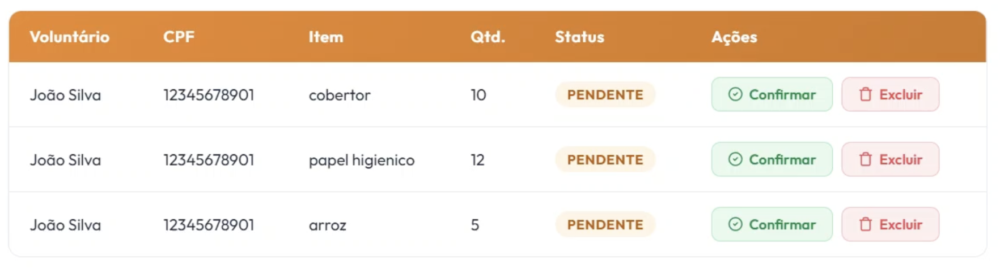

US12¶
Como moderador, quero atualizar o saldo de mantimentos da ONG, para manter o controle preciso do volume de estoque geral disponível.
Critérios de Aceitação¶
| ID | Critério de Aceite | Status |
|---|---|---|
| CA01 | O sistema deve permitir que o moderador ajuste manualmente a quantidade de itens no estoque geral para correções de inventário. | completo |
| CA02 | O saldo do estoque de mantimentos deve ser recalculado e incrementado automaticamente no banco de dados assim que ele confirmar a doacao (US13). | completo |
| CA03 | O moderador podera excluir a doação | completo |
| CA03 | A aba deve ter o nome do voluntario, CPF, Itens, Quantidade, status e ações | completo |
Definição de Preparado (DoR)¶
| Item de Verificação | Evidência / Rastreabilidade | Situação |
|---|---|---|
| Informação necessária para o trabalho? | Regras de negócio para incremento/decremento manual de estoque e categorias de mantimentos totalmente mapeadas. | completo |
| Representado por história de usuário? | Mapeado explicitamente na US12 no Backlog do Produto. | completo |
| Coberto por critérios de aceite? | Critérios estruturados e documentados na página de Critérios de Aceitação. | completo |
| Mapeado para um protótipo? | Interface de gerenciamento de estoque e painel de controle de saldos por item modelados previamente. | completo |
| Protótipo validado pelo cliente? | Fluxo de conciliação de inventário e visualização de volumes homologados junto à coordenação da ONG. | completo |
| Coerente com a prioridade definida? | Classificado como CP2, sendo um pilar vital para o controle de estoque físico e transparência logística. | completo |
| Cabe em uma Iteração? | O escopo do frontend estático e regras locais foi planejado e executado dentro do período de 15/06 a 22/06. | completo |
Definição de Pronto (DoD)¶
| Pergunta Fundamental do DoD | Evidência de Implementação | Situação |
|---|---|---|
| Entrega um incremento do produto? | Tela administrativa de controle de estoque integrada com as tabelas de saldos e listagens gerais codificada. | completo |
| A entrega está coerente com o protótipo? | O layout real reflete com fidelidade a tabela de itens, inputs numéricos e filtros por mantimento projetados. | completo |
| Contempla os critérios de aceite estabelecidos? | Validados e revisados sem impedimentos no arquivo de checagem técnica local da iteração. | completo |
| Todos os testes unitários e de integração foram aprovados? | Testes de controle numérico, bloqueio de entradas negativas e reatividade de dados aprovados. | completo |
| A entrega foi revisada e validada pela equipe? | Homologada em ambiente de teste local e validada coletivamente pelos engenheiros responsáveis do ciclo. | completo |
| A documentação técnica foi revisada e atualizada? | Histórico de artefatos de inventário consolidado e controle de versão sincronizado no repositório oficial. | completo |
Prototipagem¶

Construção & Acesso¶
Painel de Atualização e Saldo de Estoque¶
-
Link para o sistema real: Acessar Portal Entre Amigos
-
Perfil do moderador de Teste
| Perfil de Acesso | E-mail de Teste | Senha Padrão |
|---|---|---|
| Moderador / Administrador | teste@gmail.com |
zeus123 |
- Fluxo de Acesso:
- Tenha uma campanha ativa e intencoes de votos na campanha
- Clique em Gerenciar Campanhas
- Clique em Gerenciar Campanha Ativa
- Va para baixo até achar "Promessas de Doação"
- Clique em Confirmar para Confirmar uma doação
- Clique em Excluir para Excluir uma doação
- Apos ter Confirmado ou Excluido o site imediatamente ira atualizar o grafico abaixo
Rastreabilidade de Código¶
- Código de produção homologado: Repositório Principal (Branch Main)